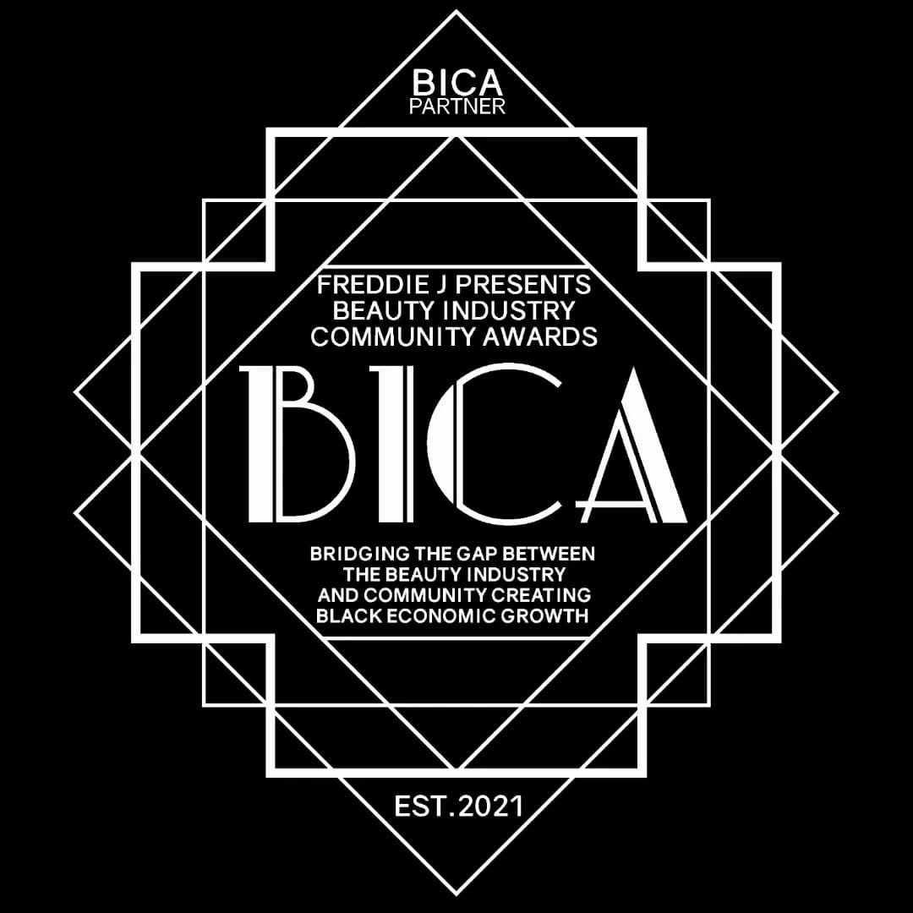

Events
Awards brunches, social energy, and chapter moments shaped around Black recognition.
BICA NYC’s public trail is centered on brunch gatherings in Harlem and Hamilton Heights, with a strong emphasis on honorees, networking, Black business visibility, and celebration with intention.
August 2024
BICA Awards Brunch NYC
Public listings for the 2024 gathering place the chapter at 440 Convent Avenue and describe the room as one that honors Black achievers and Black businesses while speaking directly to Black economic growth.
August 24, 2025
4th Annual BICA Awards Brunch NYC
Recent chapter artwork names The Social Hall at 440 Convent Avenue as the setting for the 2025 brunch and highlights Natural Hair Expert Thurando Kafele as honoree.
Programming texture
What a BICA chapter event tends to include.
Across public writeups and recent posters, BICA events repeatedly mix recognition, networking, live social atmosphere, and Black business support. The brunch format carries both polish and access, which makes it a useful frame for intergenerational rooms.
Honoree spotlight
Builders across beauty, entrepreneurship, wellness, and civic life are centered publicly.
Networking room
Guests are there to celebrate, but the underlying structure is connection and support.
Community economics
The language around Black Wall Street and intentional Black spending stays visible.
Gallery
Chapter energy from recent materials.

Honorees
Recognition remains the visual center of the chapter’s public event materials.

The room
Brunch tables and social flow create the chapter’s signature format.

Legacy mark
The chapter’s geometry-driven branding keeps the event identity crisp and memorable.